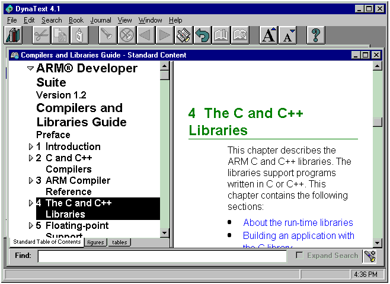
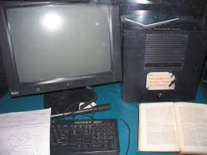

Sieć WWW
Sieć WWW - hipertekstowy, multimedialny, internetowy system informacyjny oparty na publicznie dostępnych, otwartych standardach IETF i W3C. WWW jest usługą internetową, która ze względu na zdobytą popularność bywa błędnie utożsamiana z całym Internetem.
Historyczne logo WWW
Brytyjski inżynier i naukowiec sir Tim Berners-Lee, obecnie dyrektor World Wide Web Consortium (W3C), napisał w marcu 1989 projekt oparty na ENQUIRE (aplikacji i bazie danych, którą stworzył na własny użytek w 1980). Przedstawił w nim dużo bardziej rozbudowany system zarządzania informacjami, który stał się zalążkiem obecnej WWW. Po jakimś czasie dołączył do niego belgijski naukowiec Robert Cailliau, z którym Berners-Lee współpracował w ośrodku CERN. 12 listopada 1990 opublikowali oficjalny projekt budowy systemu hipertekstowego zwanego „World Wide Web” (w skrócie: WWW, lub jeszcze krócej: W3), obsługiwanego przy pomocy przeglądarki internetowej, używającego architektury klient-serwer. Użycie hipertekstu umożliwiło dostęp do różnego rodzaju informacji poprzez sieć odnośników, tzw. hiperłączy – oglądając stronę internetową, użytkownik może podążać za zamieszczonymi na niej hiperłączami, które przenoszą go do innych, udostępnionych w sieci dokumentów lub innych stron internetowych. Początkowo „World Wide Web” został oparty na SGML-owej przeglądarce o nazwie „Dynatext”, opracowanej w ramach działalności Instytutu Badań nad Informacją i Wiedzą (Institute for Research in Information and Scholarship) Uniwersytetu Browna. „Dynatext” był projektem komercyjnym, licencjonowanym przez CERN – okazał się jednak zbyt kosztowny w używaniu dla szerszej społeczności (wówczas było to środowisko fizyków wysokich energii), bowiem przewidywał opłatę za każdy nowy dokument oraz za każdorazową jego edycję.
Okno przeglądarki Dynatext
System informacyjny „World Wide Web” zaprojektowano, aby zbierać zasoby ludzkiej wiedzy i umożliwić współpracownikom w odległych miejscach dzielenie się swoimi pomysłami oraz zgłębianie wszystkich aspektów wspólnego projektu. W przypadku, gdy dwa projekty tworzone były niezależnie od siebie, WWW pozwalała skoordynować pracę naukowców, dzięki czemu obie prace stawały się jednym spójnym dziełem. Niniejszy projekt szacował, że służąca tylko przeglądaniu sieć rozwinie się w ciągu trzech miesięcy, a w ciągu pół roku użytkownicy będą mieli możliwość publikowania nowych materiałów i odnośników do nich, dzięki czemu system stanie się w pełni uniwersalny. Usługa została oficjalnie uruchomiona w grudniu 1990 roku.
Jako pierwszy na świecie serwer internetowy, Berners-Lee zastosował komputer NeXT, na którym stworzył również pierwszą przeglądarkę o nazwie WorldWideWeb (zmienionej później na Nexus). Do czasu świąt Bożego Narodzenia 1990 roku Berners-Lee zbudował wszystkie narzędzia niezbędne do działania WWW: przeglądarkę WWW (która służyła również jako edytor), pierwszy serwer WWW oraz pierwsze strony WWW, opisujące nowo powstały projekt. 6 sierpnia 1991 roku zamieścił krótkie podsumowanie projektu „WorldWideWeb” na grupie dyskusyjnej alt.hypertext. Ta data jest również uznawana za debiut publicznie dostępnych usług w Internecie. Pierwszy serwer poza Europą został uruchomiony w Centrum Liniowego Akceleratora Stanforda (SLAC) w grudniu 1992. Zasadnicza koncepcja hipertekstu pochodzi ze starszych projektów z lat 60., takich jak: Hypertext Editing System (HES) utworzony na Uniwersytecie Browna, Xanadu autorstwa Teda Nelsona i Andriesa van Dama oraz oN-Line System (NLS) Douglasa Engelbarta. Nelson i Engelbart z kolei inspirowali się mikrokomputerem Memex, który w 1945 r. został opisany esejem pt. „As We May Think” Vannevara Busha.
Pierwszy na świecie serwer webowy
Punktem zwrotnym w historii World Wide Web było wprowadzenie, w 1993 roku, przeglądarki Mosaic, działającej w trybie graficznym. Przeglądarka ta została opracowana przez zespół „Narodowego Centrum Zastosowań Superkomputerów” (National Center for Supercomputing Applications) na Uniwersytecie Illinois w Urbana-Champaign (NCSA-UIUC), który kierowany był wówczas przez Marca Andreessena. Mosaic była finansowana przez „Inicjatywę Wysokowydajnych Technik Obliczeniowych i Komunikacyjnych” (High-Performance Computing and Communications Initiactive), powstałej dzięki „Ustawie o Wysokowydajnych Technikach Obliczeniowych i Komunikacyjnych” (High Performance Computing and Communication Act) z 1991 roku, będącej jednym z kilku opracowań dotyczących rozwoju informatyki, zainicjowanych przez senatora Al Gore'a. Przed wprowadzeniem przeglądarki graficznej Mosaic, strony internetowe nie posiadały grafiki wplecionej bezpośrednio w tekst, a popularność WWW była mniejsza niż starszych protokołów używanych dotychczas w Internecie, takich jak Gopher czy WAIS – interfejs graficzny przeglądarki Mosaic uczynił WWW zdecydowanie najpopularniejszą usługą internetową.
World Wide Web Consortium (W3C) zostało założone przez Tima Bernersa-Lee po opuszczeniu przez niego ośrodka CERN, w październiku 1994 roku. Konsorcjum zostało utworzone w Laboratorium Informatyki MIT (Massachusetts Institute of Technology, Laboratory for Computer Science, MIT/LCS), z pomocą agencji „Agencji Zaawansowanych Obronnych Projektów Badawczych” (Defense Advanced Research Projects Agency, DARPA), będącej pionierem w rozwoju Internetu, oraz Komisji Europejskiej. Do końca 1994 r., gdy całkowita liczba stron internetowych stanowiła ułamek ich obecnej liczby, wiele spośród znanych dziś stron było już uruchomionych, a część z nich mogło stanowić inspirację dla wielu współczesnych serwisów internetowych.
Dzięki połączeniu z Internetem, na całym świecie zaczęły powstawać serwery WWW, tworząc ogólnoświatowe standardy nazewnictwa domen internetowych. Od tamtej pory Berners-Lee odegrał bardzo aktywną rolę w nadawaniu kierunku rozwoju standardów sieciowych (takich jak np. języki znaczników, w których strony internetowe są tworzone), a w ostatnich latach opowiada on o swojej wizji Semantic Web. World Wide Web, dzięki łatwemu do opanowania interfejsowi obsługi, aktywnie rozpowszechnia informacje za pośrednictwem Internetu – tym samym odgrywa istotną rolę w jego popularyzacji – mimo że te dwa pojęcia są często mylone w powszechnym użyciu: World Wide Web nie jest całym Internetem, a jedynie pewną aplikacją zbudowaną na jego bazie.